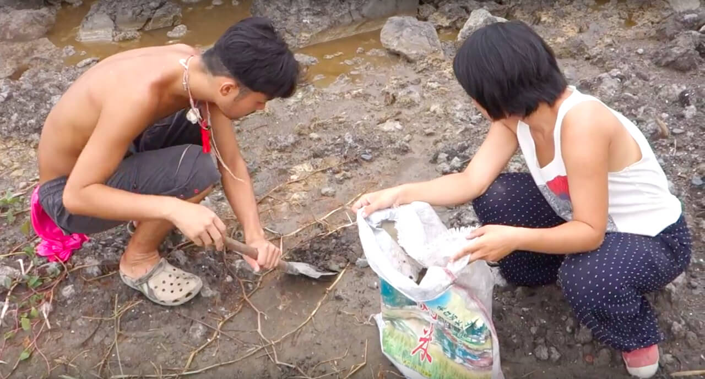
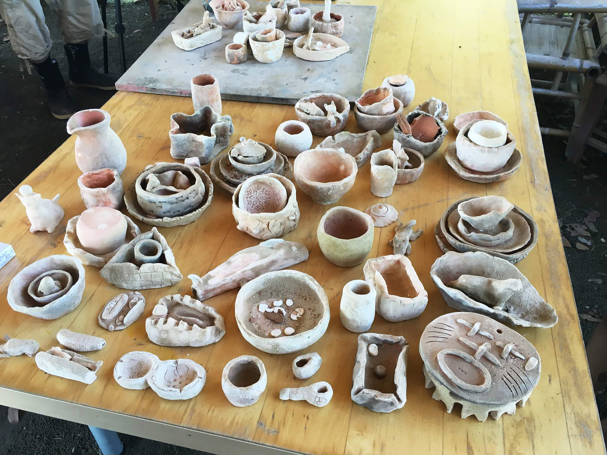
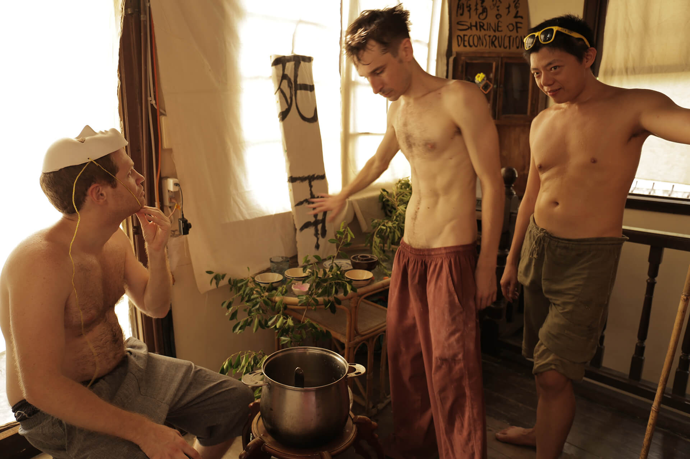
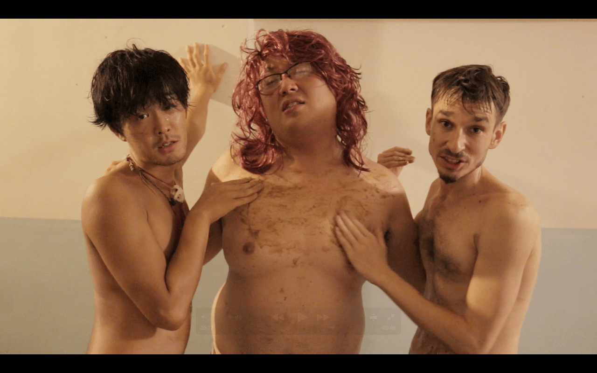
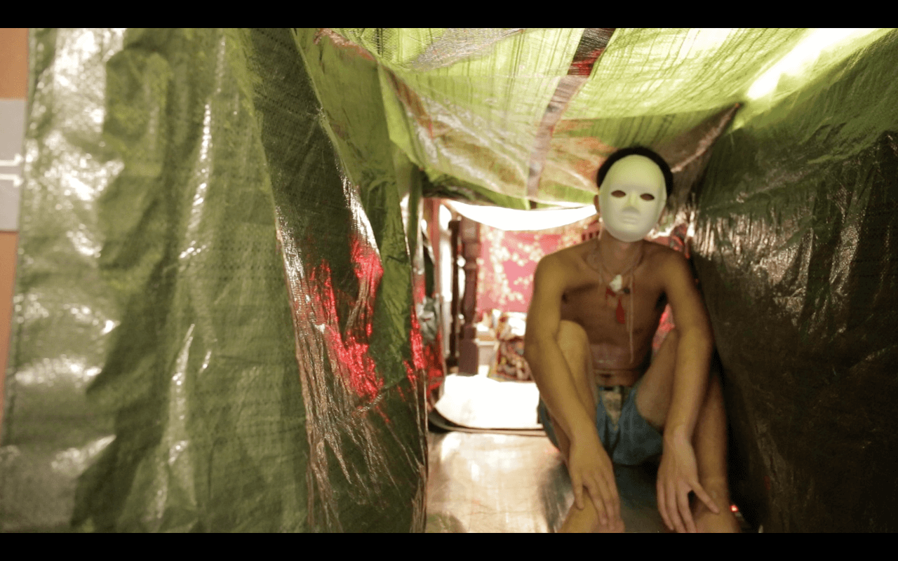
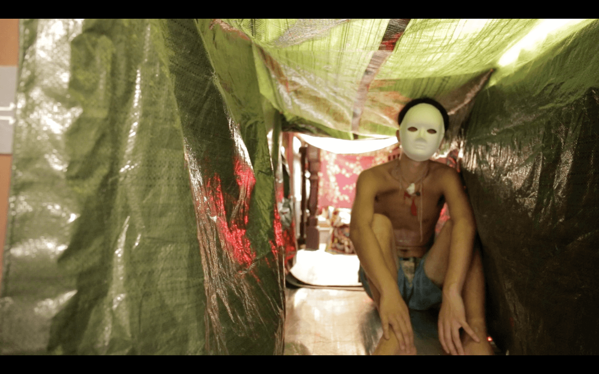

Division of The Commons
Artist││Li Kuei-Pi, Lee Pei-Yu, Nicholas Coulson
Curator│Chiu Po-Ting, Showzoo Tsai
Term│08/06 ～09/04
Opening│02:00 pm 08/06
Venue│Exhibition Room & Japanese Room, Neng Sheng Xing Factory
FB：https://www.facebook.com/events/1243007109045683/
※Opening performance & workshops︰
│08/06│"Enter the Hole", interactive installation and guidance into the psychological journey of a lifestyle activist, by Nicholas Coulson
│08/11-12 ││08/20-21│Workshops, by Lee Pei-Yu
We have entered the era where advancement or breakthrough along straight trajectories is no longer possible. World events occur swiftly one after another; all entangled in various chain reactions. Is there still a chance to have constructive reflection on an issue? Is there any remaining possibility to act of our own freewill rather than being passively manipulated by external forces? Members of Neng Sheng Xing Factory transformed the image of an abandoned ironworks into a vibrant space full of experiments in social relations. Art and cultural activities here also constantly invoking new imaginations of “the commons”.
Three resident artists are to present their works in this group show: Li Kuei-Pi, Lee Pei-Yu, and Nicholas Coulson. They apply similar methodology: to enhance the existence of what people usually turn a blind eye to. Li Kuei-Pi tries to remember her grandmother, by relating her life story to the vicissitudes of the local spinning industry in Tainan. Lee Pei-Yu takes an object of everyday life─the bowl, as a medium for inquiry into the alienation of the masses from the products they produce. By making bowls from contaminated soil collected from polluted areas nearby, she intends to bring to our attention that people should be more aware of the relationship between themselves and the land they live in, rather than distance themselves from it. Nicholas Coulson initiates his project based on his sociology studies, building up four micro-exhibition rooms which symbolize four stages in the adventure of becoming/not becoming an activist.
We regard this exhibition space as a consulting room, interacting with the artworks would be the process of diagnosis. There is no fixed line between normal and abnormal, because each and every one has a way to face this world. As a subject, “I” am always a divided unity. But as long as we are social beings, the issue of the commons remains. With the dynamic of constantly forming relationality, figures of co-existence and community change as well. These three art projects related to social issues represent three experiments with the commons.
Artist

║Li Kuei-Pi║
Born in 1991, A Taiwanese artist currently working and living in Taipei. Her works are mainly about issues of the production process in capital society. By altering the relationship within the process, she could enhance conflicts which were faint before. Creations are in the form of actions workshops and installations. 2014 she started a project called Relationship Studio, which engaged in various sceneries of producing, reforming the relationship between subjects and their products.


WORKS：Colonial History of Calico

║Lee Pei-Yu║
Graduated from Department of Material Art and Design, Tainan National University of Arts.
Having seen the rise and fall of economy in Taiwan along with her parents, therefore, she knows the limit of knowledge and the significance of how mankind relates to the environment. She started creating ceramic works since college. Currently, she applies the same media to reshape the relationship between people and natural environments.

WORKS：Eat Dust Together

║Nicholas Coulson║
Creative work walks the tightrope between video-journalism sociology and interactive performance art, with a recent interest in the potential of rites and rituals fin facing up to contemporary psychological and social dilemmas produced of late capitalist modernity. Currently exploring the emergence of lifestyle movements and activist spaces throughout post-democratization Asia for his Master's thesis at the Graduate Institute of Sociology at Taiwan National University.
 

WORKS：Enter the Hole︰Spaces of Transformation and the Emancipatory Journey
Curator

║Showzoo Tsai║
Who is she? No fixed characterization does justice. She once said she is a mirror, whoever accepts to look into this mirror should be wary, for certain of their subtly hidden characteristics would be in the reflection and thus replace the previous identity. As the falling rain is hard to pinpoint, so is Showzoo Tsai’s very existence. Uncapturable to the naked eye. Please take a detour or hide when you see her coming.

║Chiu Po-Ting║
An anthropological emissary sent from Taipei, the kingdom of privilege and mild-tempered, socially-acceptable superiority complexes, to observe, negotiate and hopefully survive the intricate web of unwritten social rules and fiery relations in the deep, dangerous south of Taiwan. Running an artist daycare center, holding several orgies of trans-disciplinarity. Prefers a combination of anthropology and psychoanalysis. A bloodthirsty carnivore, will die if he doesn’t consume meat, ambitious.